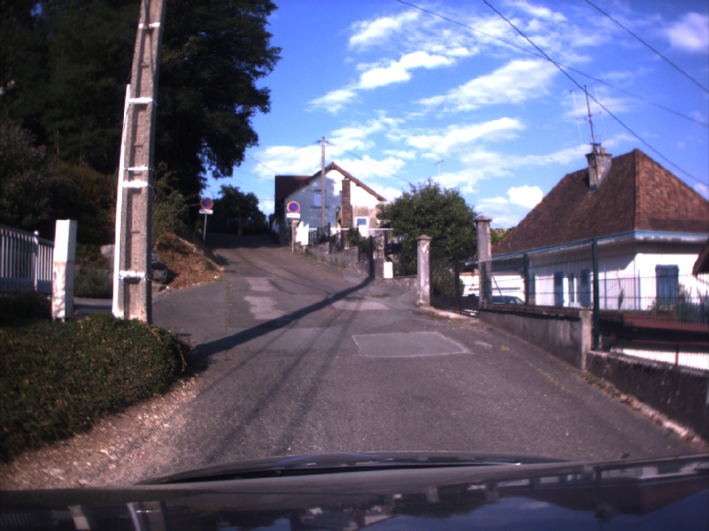
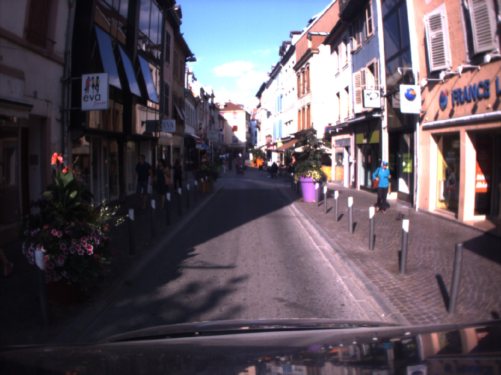
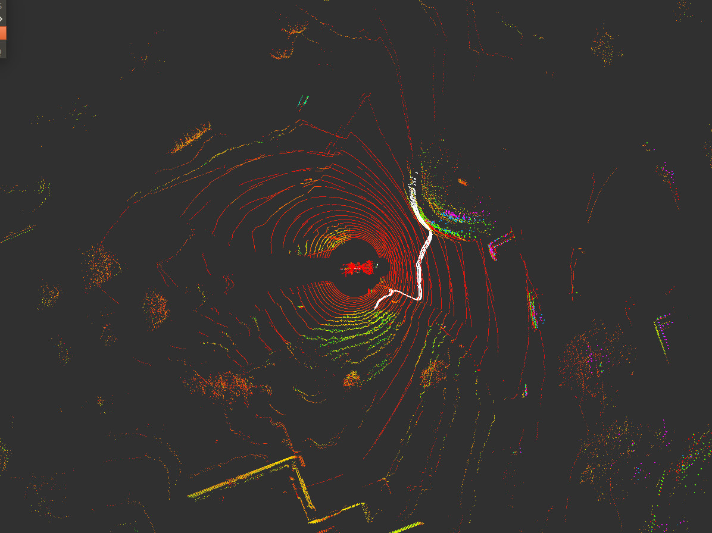

UTBM Multisensor ROS-based Dataset for Autonomous Driving
--- collected by our very own UTBM robocar


This dataset was collected with our robocar equipped up to ten heterogeneous sensors, in the old town of Montbéliard in France. The driving distance is up to five kilometers (containing a large and a small loop) and the length of recorded data is about 16 minutes per collection round. In addition to the typical eastern French city, users can feel the daily changes of the city. For a quick overview, please refer to the following video.
This dataset provides:
If you publish work based on, or using, this dataset, we would appreciate citations to the following:
manuscript under review ...

Our design mainly adheres to the following two principles: 1) strengthen the visual scope as much as possible, and 2) maximize the overlapping area perceived by multiple sensors. In particular,
Many new research challenges have been introduced in this dataset, such as sloping road, shared zone, diversion, roundabout, etc.
|  |  |  |
 |
| sloping road | shared zone | diversion | roundabout |
| Date | Time | Sensor | Raw data |
|---|---|---|---|
| 2018-07-16 | 16:10-16:26 | all lidars | rosbag |
| 2018-07-17 | 15:40-15:56 | all lidars | rosbag |
| 2018-07-18 | 15:04-15:20 | all lidars | rosbag |
| 2018-07-19 | 16:15-16:50 | all lidars | rosbag |
| 2018-07-20 | 16:35-16:51 | all lidars | rosbag |
Please note that, 1) it is a growing dataset and will be incrementally published, 2) images will be available after processing to meet the GDPR requirements.
https://github.com/epan-utbm/utbm_robocar_dataset

This work is licensed under a Creative Commons Attribution-NonCommercial-ShareAlike 4.0 International License.
Copyright (c) 2018 Zhi Yan, Li Sun, and Yassine Ruichek.
This work was supported by the Quality Research Bonus (BQR) of the University of Technology of Belfort-Montbéliard (UTBM), the Contrat de Plan État-Région (CPER) 2015-2020 Mobilitech, and the PHC Barrande programme under grant agreement No. 40682ZH (3L4AV).
The authors would like to thank Abdeljalil Abbas-Turki, Olivier Lamotte, Jocelyn Buisson, and Fahad Lateef for their help in building the dataset, and the Lincoln Centre for Autonomous Systems (L-CAS) for hosting the dataset.